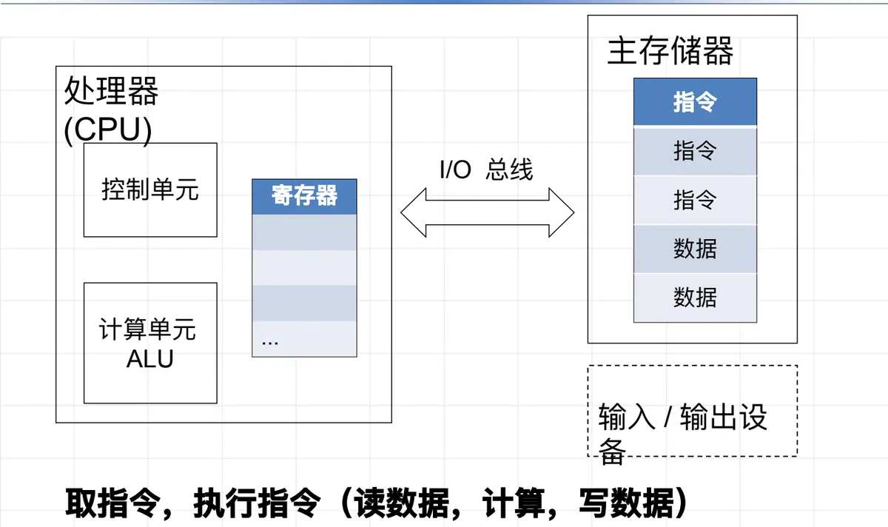
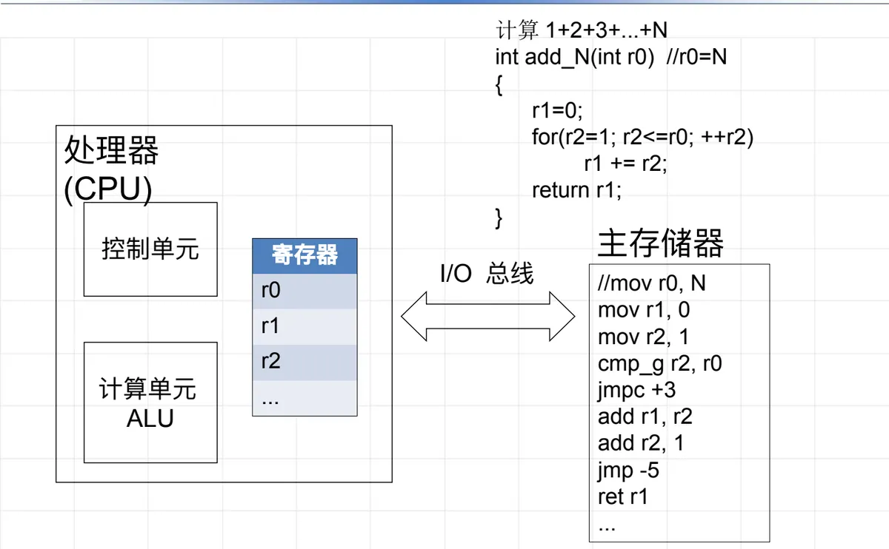
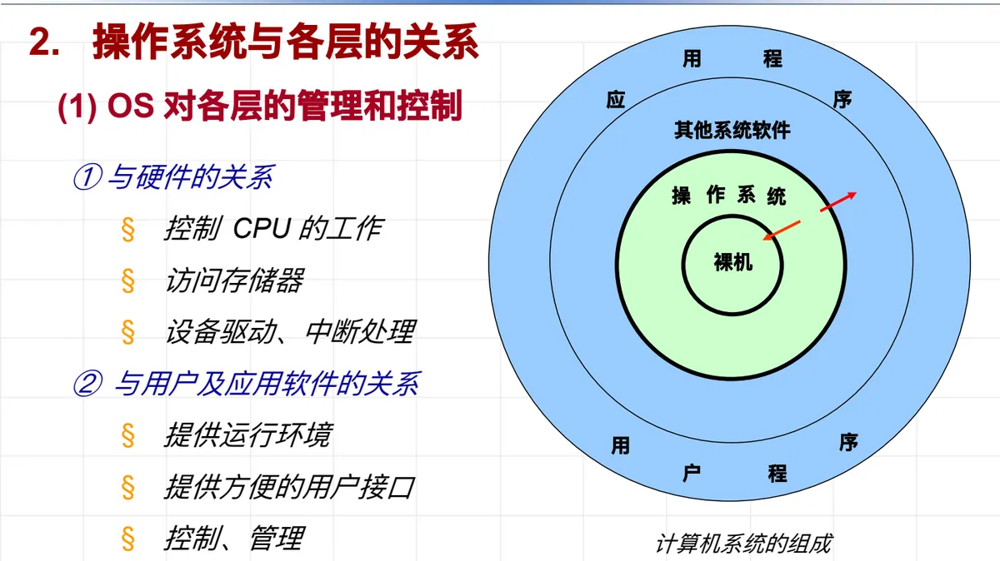
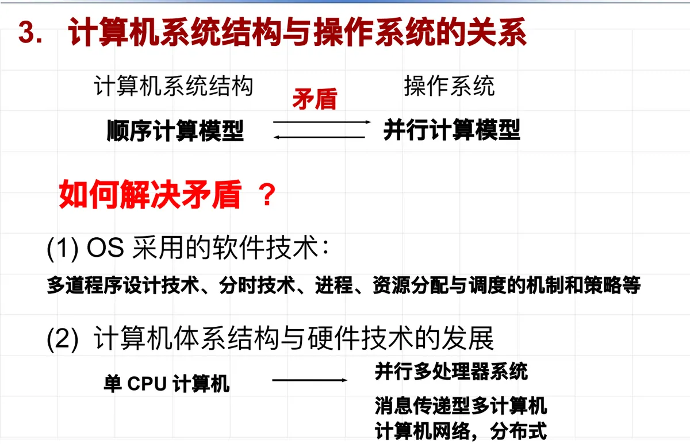

操作系统原理 · 第 1 章 绪论
1.1 操作系统在计算机系统中的地位
这一节回答一个总揽性的问题：操作系统在计算机系统中到底处于什么地位？思路是三步走：先弄清它管理的硬件——存储程序式计算机——长什么样；再看它在计算机系统分层中「承上启下」的位置；最后引出贯穿整门课的矛盾：硬件提供的顺序计算模型与应用需要的并行计算模型之间的矛盾。
1. 存储程序式计算机：操作系统赖以存在的硬件
看清一个事物的本质，就要从它的产生说起。计算机的诞生源于大量计算的需求：加密解密、统计、物理计算等各种复杂问题，最终都要转化为算术四则运算才能求解。
在计算机出现之前，计算靠手工操作完成：由人来主导——预先确定计算方案，输入原始数据，按操作步骤做第一步计算，记下中间结果，再做下一步计算，直到算出并记录最终结果。算盘和计算器只是辅助人加快计算的工具，纸张用来记录结果。
那么，如何用一种机器实现计算的自动化？数学家冯·诺依曼总结了手工操作的规律，指出机器要自动计算，必须满足三个前提：
- （1）必须预先有计算方案（对计算过程的描述）和初始数据；
- （2）机器能够理解计算过程，并顺序执行其中的操作；
- （3）机器能够获取指令、初始数据和中间计算数据，并能输出结果。
1945 年，冯·诺依曼据此提出了存储程序式计算机（冯·诺依曼体系结构）：把描述计算过程的指令和数据一同存入存储器，机器自动地一条条取指令、执行指令，直到整个程序运行完毕——计算从此实现了自动化。
（1）基本部件
- CPU：运算器、控制器、寄存器（保存状态和中间结果）；
- 存储器：用来存储计算过程（指令）和数据；
- I/O 设备：输入数据、输出计算结果。

（2）「存储程序」如何落地：一个例子
拿「计算 1+2+3+…+N」这个例子，能把上面的部件和工作方式看得更具体。先用 C 语言描述这个方案：
int add_N(int r0) // r0 = N
{
r1 = 0;
for (r2 = 1; r2 <= r0; ++r2)
r1 += r2;
return r1;
}把它编译成机器指令，大致是这样一段：
; 入口参数：r0 ← N（由调用方置好）
mov r1, 0 ; 累加和清零
mov r2, 1 ; 循环变量置 1
cmp_g r2, r0 ; 比较：r2 > r0 ？
jmpc +3 ; 是 → 跳出循环
add r1, r2 ; 否 → 累加：r1 += r2
add r2, 1 ; 计数：r2 += 1
jmp -5 ; 跳回 cmp_g，继续循环
ret r1 ; 返回累加和
这段小程序正体现了存储程序的精髓：指令和数据都存放在主存储器中；CPU 中的控制单元负责取指令，计算单元 ALU 完成加减、比较等运算，寄存器 r0、r1、r2 暂存参数与中间结果。整个工作过程就是周而复始的「取指令 → 执行指令（读数据、计算、写数据）」。
（3）结构特点：集中顺序过程控制
存储程序式计算机的工作方式可以概括为集中顺序过程控制：
- 过程性：模拟人们手工操作的步骤；
- 集中控制：由 CPU 集中管理；
- 顺序性：指令顺序执行。
（4）变与不变
计算机的本质是用指令来处理数据；程序（作业）就是指令和数据的集合，也可以看作「数据结构＋算法」。从 1945 年至今：
- 计算机的模型没有变；
- 计算机的本质没有变；
- 程序的本质也没有变；
- 变化的只是计算机中各个部件的规模和性能。
部件的发展大致沿着四条线：CPU——运算器、控制器、寄存器到多核，指令集从 x86（8086、386…）、x86-64 到 ARM（v4～v7）、ARMv8、MIPS、RISC-V，寄存器位数和数量不断增长；存储器——高速缓存 cache 与内存；输入/输出设备；以及总线。
2. 操作系统与各层的关系
把视野从单台机器的部件拉高到整个计算机系统。一个计算机系统自上而下大致分层：应用程序（含用户程序）、其他系统软件、操作系统、裸机（纯硬件）。操作系统正处在「承上启下」的位置——这也是它在计算机系统中地位的直接写照。

（1）OS 对各层的管理和控制
- 与硬件的关系（向下）：控制 CPU 的工作、访问存储器、进行设备驱动和中断处理——操作系统直接管理底层硬件资源；
- 与用户及应用软件的关系（向上）：为应用软件提供运行环境，为用户提供方便的用户接口，并对它们进行控制和管理。
（2）各层对 OS 的制约和影响
- 硬件的制约：硬件提供 OS 的运行基础；但硬件是集中顺序过程控制，而操作系统是多用户、多任务的并行计算模型——两者存在根本性的错位；
- 用户和应用软件的需求：操作系统必须满足上层软件提出的各种需求，提供良好的用户界面，方便用户使用。
由此得到操作系统的宗旨：提高计算机的使用效率，方便用户使用。
3. 计算机系统结构与操作系统的关系
上一段留下的「错位」值得展开：计算机系统结构提供的是顺序计算模型，而实际应用需要的是并行计算模型，二者构成一对矛盾。如何解决这对矛盾？出路有两条：
- （1）OS 采用的软件技术：多道程序设计技术、分时技术、进程、资源分配与调度的机制和策略等——用软件在顺序的硬件上「虚拟」出并行；
- （2）计算机体系结构与硬件技术的发展：从单 CPU 计算机，到并行多处理器系统、消息传递型多计算机、计算机网络与分布式系统——从硬件上直接提供并行能力。

这两条路线正好构成本门课的主线：第 4 章「进程及进程管理」、第 5 章「资源分配与调度」讲的正是第（1）条——操作系统如何用软件技术化解这对矛盾。
本节小结
- 存储程序式计算机（1945，冯·诺依曼）：指令与数据同存于存储器，CPU 周而复始地「取指令—执行指令」；
- 基本部件＝CPU（运算器、控制器、寄存器）＋存储器＋I/O 设备；工作特点是集中顺序过程控制（过程性、集中控制、顺序性）；
- 计算机的本质是用指令处理数据，程序＝指令＋数据＝数据结构＋算法；模型不变，变的是部件的规模与性能；
- 计算机系统分层：应用程序／其他系统软件／操作系统／裸机。OS 向下管理硬件（CPU、存储器、设备、中断），向上提供运行环境与用户接口；宗旨是提高使用效率、方便用户使用；
- 核心矛盾：顺序计算模型 vs 并行计算模型；两条出路——OS 软件技术（多道程序设计、分时、进程、调度）与硬件体系结构发展（多处理器、多计算机、分布式）。